漯河日报：与爱同行 从小诊所到医养健康产业集团
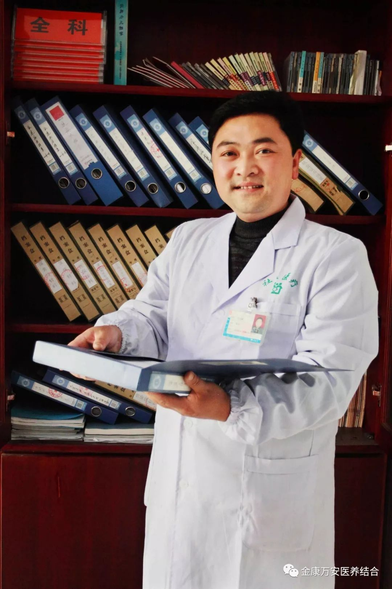
漯河，这个在沙澧河怀抱里滋养了数千年的中原福地，人才辈出，人杰地灵。古有东汉许慎因编撰世界第一部字典《说文解字》而彪炳史册…今更有一大批时代的弄潮儿，为漯河的改革开放、经济腾飞、社会进步、健康幸福、和谐发展，描绘着一部部波澜壮阔、造福漯河的画卷，谱写出一曲曲与爱同行、善行漯河的奉献之歌……站在改革开放40周年的时间节点上，我们聚焦“医疗+养老”这个新兴的医养结合领域，为你推荐一位不忘初心，砥砺前行22年的创业者、践行者、奉献者和领跑者，他就是漯河万安康复医院院长、漯河金康护理院院长、河南金康万安医疗养老服务有限公司总经理王卫峰。
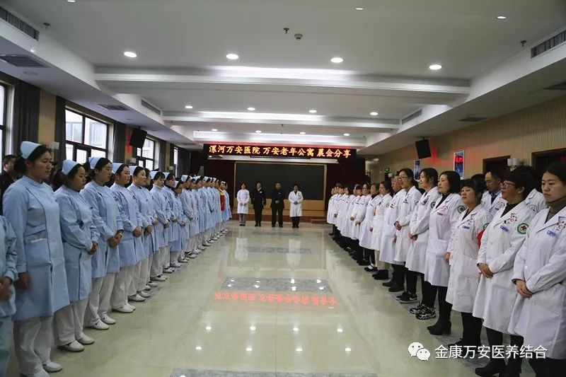
勇当改革开放的先行者
1996年7月13日，从公立医院辞职下海的王卫峰，筹资3000元创办的“卫君诊所”在市区万顺街悄然开张，那年他24岁。没有鞭炮，没有花篮，有的只是他“悬壶济世，治病救人”的初心和梦想。他没有坐等患者上门，而是天天带上心电图仪、血压计，走遍社区的大街小巷，为叔叔、大爷、婶子、阿姨们送去体检和关爱，然后为他们建立健康档案，跟踪服务。持之以恒、无微不至的医疗服务，不断地感动和获得了社区居民和众多家庭的信任和青睐……
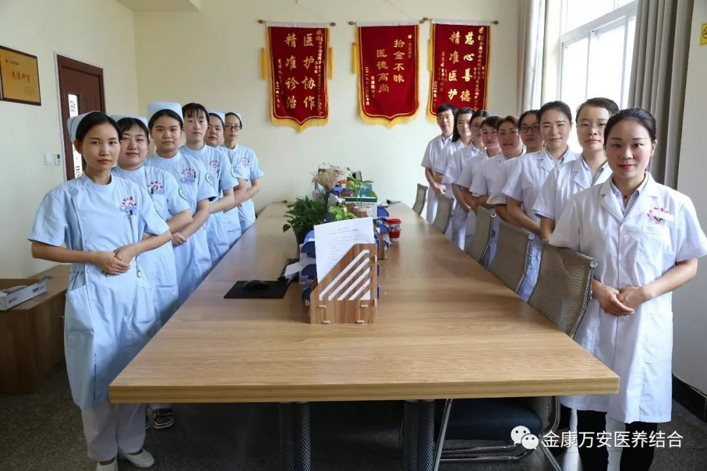
精诚所至，金石为开。在之后的三年时间里，卫君诊所风生水起，小有名气；1999年，在市、区两级卫生局、天桥街道办事处的支持和帮助下，卫君诊所被扩大为万祥街社区卫生服务站。“那是一个青春燃烧的岁月，不管刮风下雨，白天黑夜，召之即来，有求必应，得到了社区的父老乡亲信任和肯定，时时刻刻激励和鞭策着我一路前行，并且影响着我今后的人生”。时隔20多年，王卫峰回味起当年创业时的甜酸苦辣，眼里还是情不自禁地泛起激动和感恩的泪花。
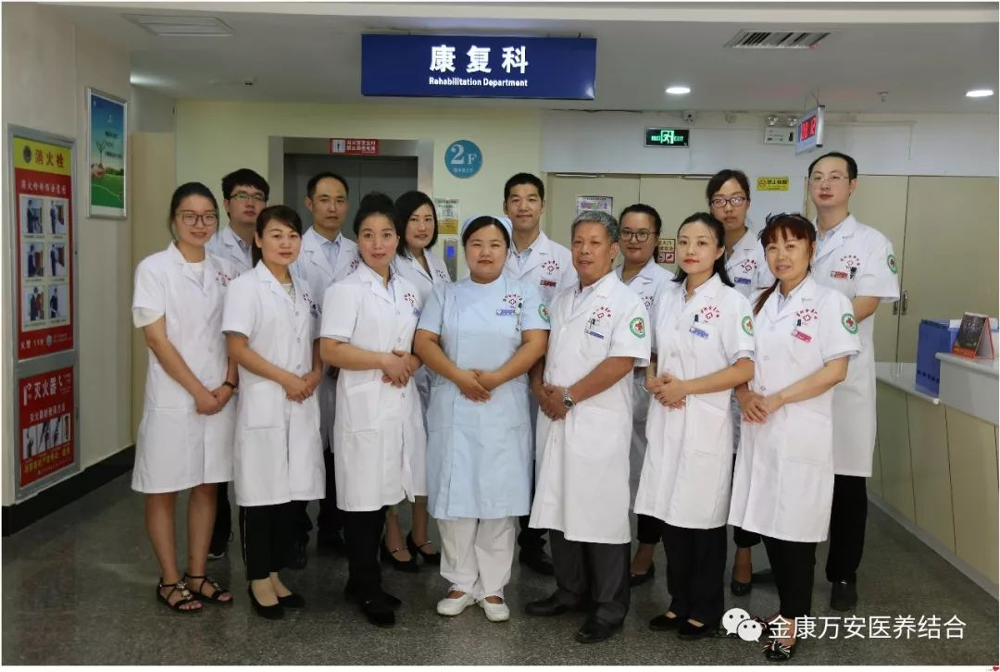
创新医养结合新模式，组建医疗+养老联合体
2010年，王卫峰敏锐地发现，我国已经逐步进入老龄社会，养老行业的发展前景广阔，大有作为。他在充分学习了国家有关政策，调查和分析了漯河养老行业现状和社会需求以后，果断决定将他的医疗事业向养老领域延伸。于是他千方百计筹资800多万元，把社区卫生服务站扩大为漯河市“漯河金康护理院”；此后又积极响应政府号召，陆续创办了居家养老服务中心、日间照料服务中心，在践行中努力探索医养结合新模式和新路径，一举成为漯河首家以医养结合为特色的规模化医疗+养老机构。
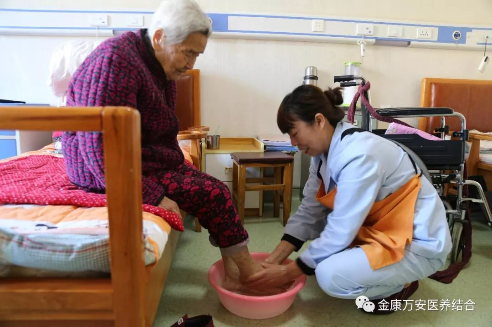
2015年，王卫峰凭着过人的胆识，成功地并购了当时比金康护理院规模大三倍的漯河万安医院，令业界为之瞩目。当时有人建议他利用万安医院的绝佳地理位置，开发房产大赚一笔；还有人给他牵线搭桥，建议他把万安医院承包给南方一家医疗机构，轻轻松松当一个只赚不赔的包租公……
对于这些短期利益的诱惑，王卫峰均不为所动，因为他心中有一个更大的梦想和追求，那就是创办一个漯河乃至周边规模大、功能全、模式先进、服务优质的康复医院，与金康护理院等共同组成一个联合体，为漯河的医养结合事业闯出一条路，竖起一面旗，干出一番积德行善、造福社会的事业，真正实现自己的人生价值。
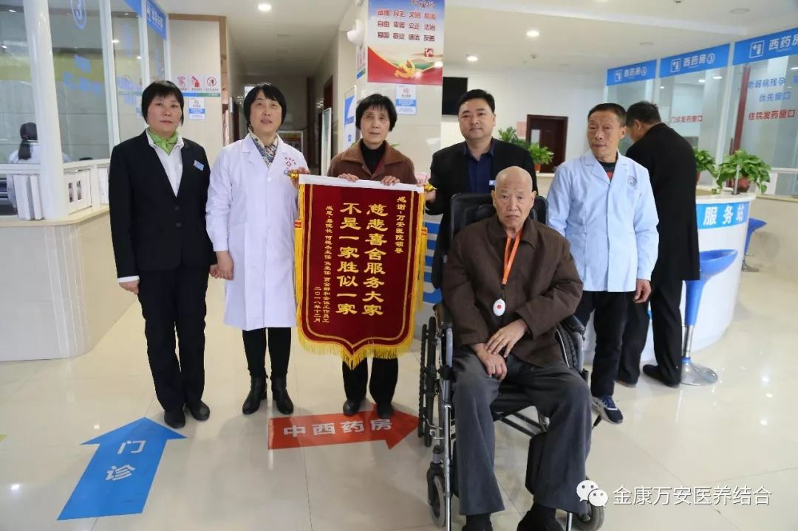
今天的漯河万安康复医院，已经在王卫峰初心和梦想的充盈下，脱胎换骨，涅?重生。C字型、1万多平方米的高层建筑群在市区长江路上傲然耸立，万安康复医院与万安老年公寓联袂辉映。整洁宽敞的多功能服务大厅，上百套国内一流、配套齐全的医疗、康复理疗设备设施，10多个专科门诊和5个重点科室，200多张住院和养老床位，每个房间都设置有卫生间和助浴设施，全覆盖的中央空调系统营造出四季如春的医疗和养老环境。“在漯河，论医疗设备和入住环境万安医院也许不是最好的，但是论医德医风和养老服务，我们更看好它”。这是众多入住老人的亲属对万安康复医院发自肺腑的评价。
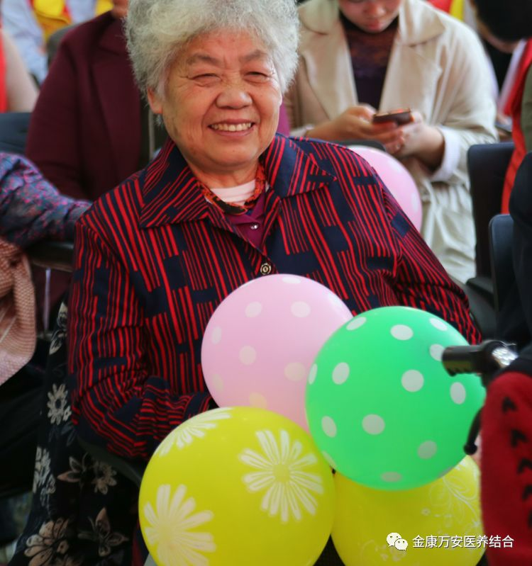
为了丰富住院病人和入住老人的精神需求和文化需求，医院设置了室内文化娱乐室、图书阅览室、书画室和理疗健身房；又在600多平方米的楼顶开辟出别有洞天的具有娱乐休闲功能的空中花园；高标准开设了全市首家医养餐厅，为住院患者和入住老人提供“私人订制”营养餐服务。
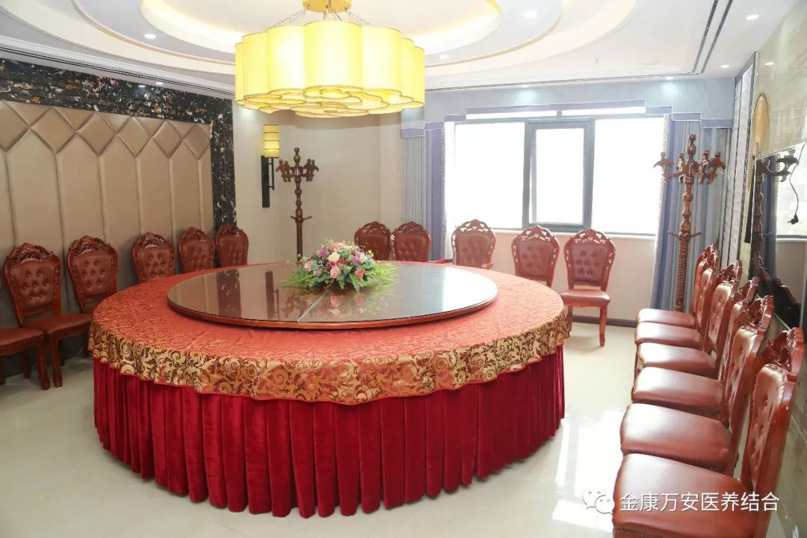
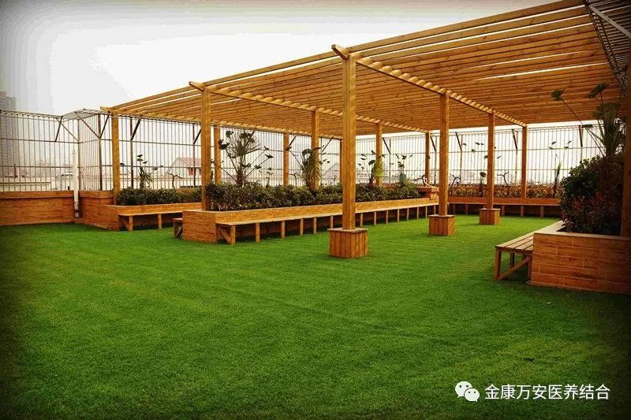
如今，由万安康复医院、万安老年公寓、金康护理院、金康万安居家养老服务中心、金康万安日间照料服务中心等组成的医养结合联合体人才济济、事业蓬勃。精湛的医术和独具特色的养老服务，使联合体的就诊率和入住率节节攀升，住院和养老床位供不应求，成为河南省首批10家，漯河市唯一的省级医养结合示范单位。
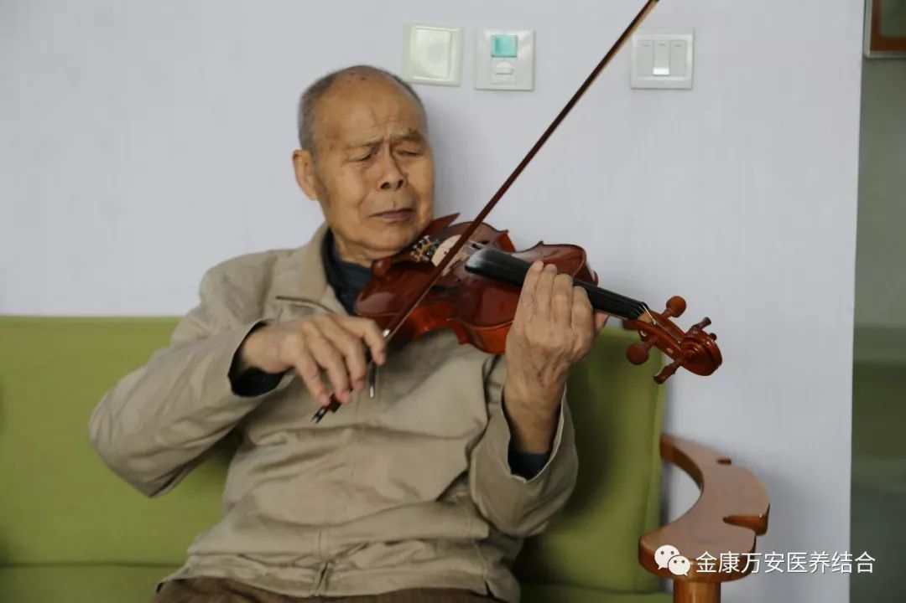
2018年11月，位于长江路13号的漯河万安康复医院，成功地晋升为漯河市民营医疗机构中首家以医养结合为特色的国家二级专科医院。笔者发现，当年的卫君诊所开张之日是13号，万安医院和联合体总部的地址是13号，数字的机缘巧合印证着王卫峰砥砺前行的奋斗足迹……
今年46岁的王卫峰，从1996年创办卫君诊所至今，已经整整22年了。22年的初心和坚守，22年奋斗和拼搏，他在美丽的沙澧河畔竖起了一座金康万安的丰碑，成为漯河医养结合养老领域一张靓丽的城市名片和行业标杆。
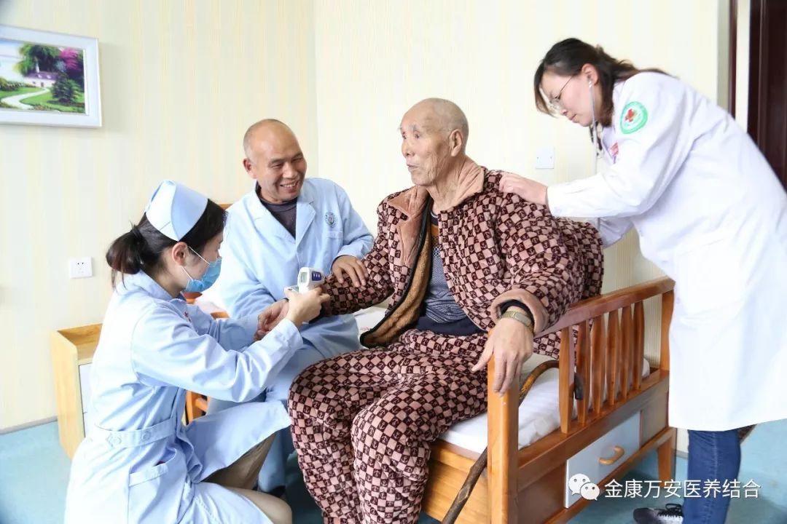
王卫峰的人生观和事业观
古往今来，大凡成功人士的成长经历都与众不同。王卫峰出生在一个农民家庭，虽家境清贫但家教甚严。他从小接受的教育是做人做事要与人为善，要乐于吃亏，不怕吃亏，要相信因果报应，多积德行善，为家族争气争光。朴素的家教在他幼小的心灵埋下了善良正直、勤奋笃学和立志用知识改变命运的种子。“因当时电不正常，当时住校的他经常在晚上点着蜡烛做作业，常常为攻破一道难题到深夜两、三点…平常一有空就主动回家帮助父母干农活，胖嘟嘟的小脸经常红扑扑的……”直到如今，王卫峰的中学老师田民选依然对这个浓眉大眼、英气勃发、笃学上进、富有个性的学生印象深刻。
人生往往因梦想而执著。王卫峰最初的梦想是当一名医生，让家族的亲人和父老乡亲们健康长寿。在20多年的践行中，逐步升华为胸怀大志、天道酬勤、积德行善、医养天下的人生观和事业观。
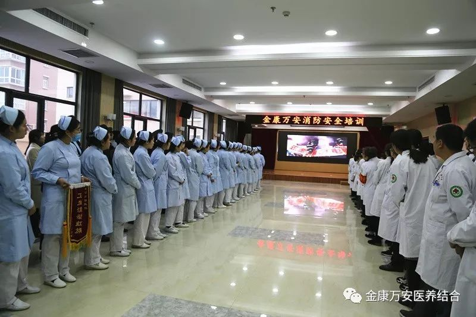
不积跬步，无以至千里；不积小流，无以至江海。在医疗养老领域里深耕多年的王卫峰，一步一个脚印，一步一个舍得，一步一份奉献，一步一份收获。据不完全统计，他和他的伙伴们在22年间，先后为广大患者提供了近百万次诊疗服务和近5万次的出诊服务，为众多老人、五保户、残疾人提供了上万人次的住院医养服务，先后收到感谢锦旗300多面。每一面锦旗都蕴含着一个感人至深的故事和大爱亲情。
22年间，王卫峰心无旁骛、从不缺席地在漯河的医养结合领域里砥砺前行，大放光彩。先后荣获中国孝亲敬老之星、中国社区志愿者之星、河南省十大敬老楷模、首届中原忠孝人物、漯河市劳动模范、漯河市社区服务工作先进个人、漯河市慈善工作先进个人、漯河市优秀人大代表等荣誉称号。与漯河改革开放涌现出来的风流人物一起，星光闪烁，荣耀漯河。
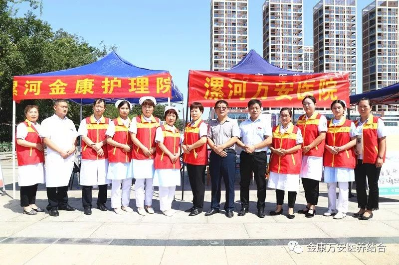
王卫峰从改革开放的一名普通的参与者，逐步成长为漯河医养结合领域和养老行业的先行者和领跑者。先后成为河南省养老产业协会理事、河南省人口学会常务理事，被推选为漯河市养老产业协会会长。多年来，他为协会提供学习和交流场所，连续承办了4届漯河市养老护理员培训班，为漯河的养老产业培养出600多名养老护理人才。作为市、区人大代表，他连续几年在人代会上提出一系列关于医养结合和养老行业的提案和建议，为漯河的养老产业的整体发展出谋献策、担当尽责。
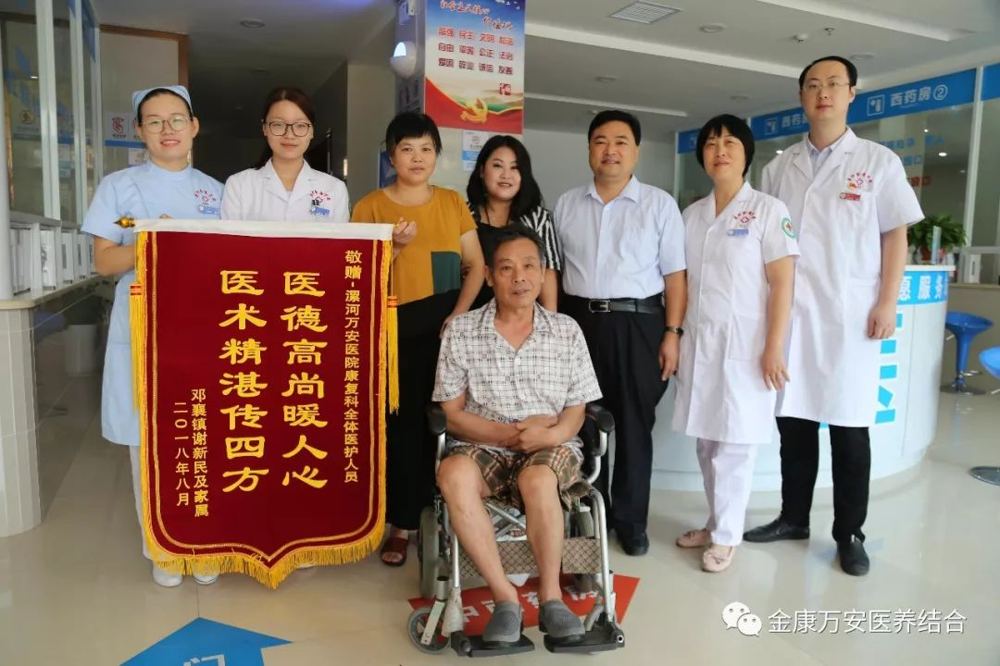
王卫峰的服务观和文化观
“没有人能随随便便成功”，这是一首励志歌曲的歌词，同时也是王卫峰22年创业之路的真实写照。想当年，他把卫君诊所的营业时间定为“白加黑”24小时，晚上休息基本上不宽衣解带，只要有人打电话马上就背着药箱上门，一年365日天天如此；他走遍了社区每一个有慢性病或老年患者的家庭，半夜三更登门问诊、打针送药，理疗输液更是家常便饭；在社区卫生服务站，他为几百名老人建立起规范的健康档案，并且每年免费为他们进行健康体检。
多年来，他和他的伙伴们积极参与“医疗扶贫”和“天使减贫”活动，为困难患者减免药费、慈善捐款捐物价值500多万元；金康万安的义诊小分队深入社区和偏远农村开展免费体检和义诊近1000次，惠及6万多人；有时候上门服务，为困难患者和五保老人全面体检并免费提供营养早餐，从来不图任何回报……
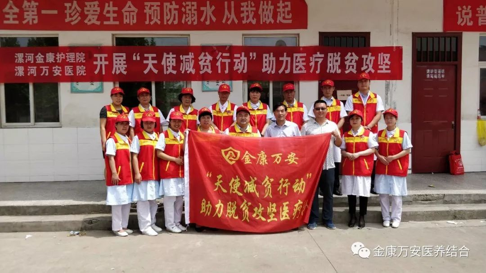
“我是一个农民的儿子，我更是全天下老人的儿子。”从小就孝敬父母的王卫峰，把“孝慈仁善”作为自己做人做事的准则和企业文化的灵魂，并且数十年如一日的践行之。如今，他依然每天早晚给老母亲问安；每天到入住患者和老人中间走访，嘘寒问暖；凌晨两、三点到医院查房更是家常便饭...持之以恒地付出和关爱，感动着、影响着、带动着他身边的每一个人。
多年来，他把“视老人为父母，把患者当亲人”的服务理念，深深地烙在他和金康万安医养团队的脑海里，把“善行漯河”城市文化与“孝慈仁善”企业文化融合，化做践行社会主义核心价值观的实际行动。持之以恒的“微笑+您好”礼仪服务，让每位来到金康万安的病人、老人和亲属都倍感亲切、如沐春风；他把“为老人喂饭、助浴、排便、剪指甲、梳头、翻身”等细节都分解到标准化的服务流程中；每一个星期，员工都会义务为入住老人包一次馄饨或者水饺；为入住老人过集体生日、举办晚会在金康万安已经成为常态化。“不是儿女，胜似儿女”的亲情和“孝慈仁善”的文化氛围，使一位入住近6年的90岁老人，不愿意女儿接他去香港过年。临出院时拉着王卫峰的手依依不舍地说：“过完年我就回来啊卫峰，我还要恁给我介绍个老伴儿呐”。
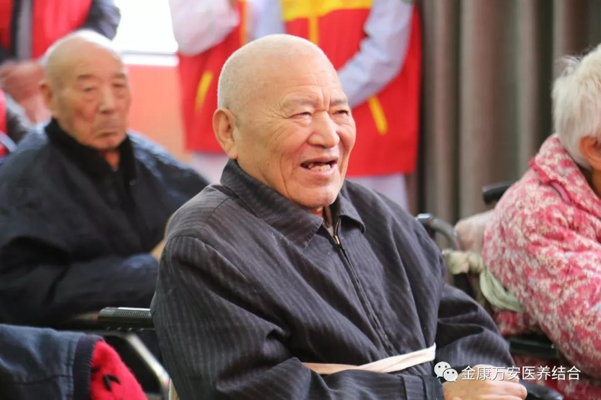
细微之处有大爱，点滴之处见胸怀。金康万安不仅是一个医养机构，同时更像是一个大家庭。在这里所有员工都是家人，每位员工和父母过生日，都会收到生日蛋糕，并且在微信群里收到“全体家人”的祝福；每周一的全体晨会和每天早上的科室晨会，充满正能量的企业文化诵读，潜移默化地激励着每个员工的“精气神”。作为金康万安的创始人和掌舵者，平时一有机会，他就不惜成本送员工培训和学习，一有评先活动就积极推荐优秀员工参与。多年来先后有40名员工获得了高中级专业资格证书，有18名优秀员工分别获得了全国五一劳动奖章，省市级劳模、最美卫计人、敬老楷模和先进工作者。在他们的“军功章”上，彰显出王卫峰无私的关爱和博大的胸怀，同时也使金康万安的全体家人从中找到了存在感、获得感和人生价值，进而化作强大的凝聚力、向心力、竞争力和领导力，引领着金康万安团结奋进，一路向前。
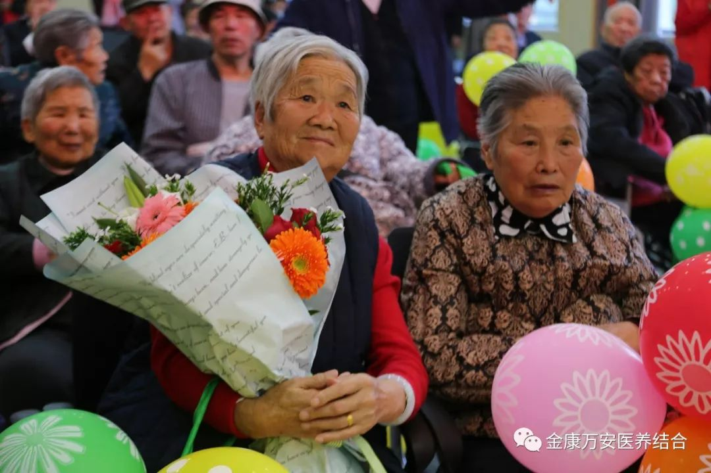
王卫峰的发展观和事业梦
展望未来，王卫峰运筹帷幄，纵横捭阖，又在谋篇布局新的蓝图和发展愿景：一是继续优化提升金康万安的医养结合模式、品牌优势和“孝慈仁善”文化，把养老事业向大城市拓展；二是积极践行“健康中国”国家战略，加大对河南金康万安健康管理中心的运营力度，带头先行先试，为健康管理事业按下快捷键，实现让众多“三高”、“五高”及“亚健康”人群健康起来的愿望和初衷，打造出新的产业增长点；三是导入“互联网+医养结合”创新理念，倾力打造一个智能养老设备+老人网络社交平台的增长极。三大板块齐头并进，构筑出金康万安医养健康事业的生态产业体系，奋力实现传统养老向智能养老和智慧养老的新跨越。
王卫峰率领着金康万安医养健康产业联合体，一路向前……
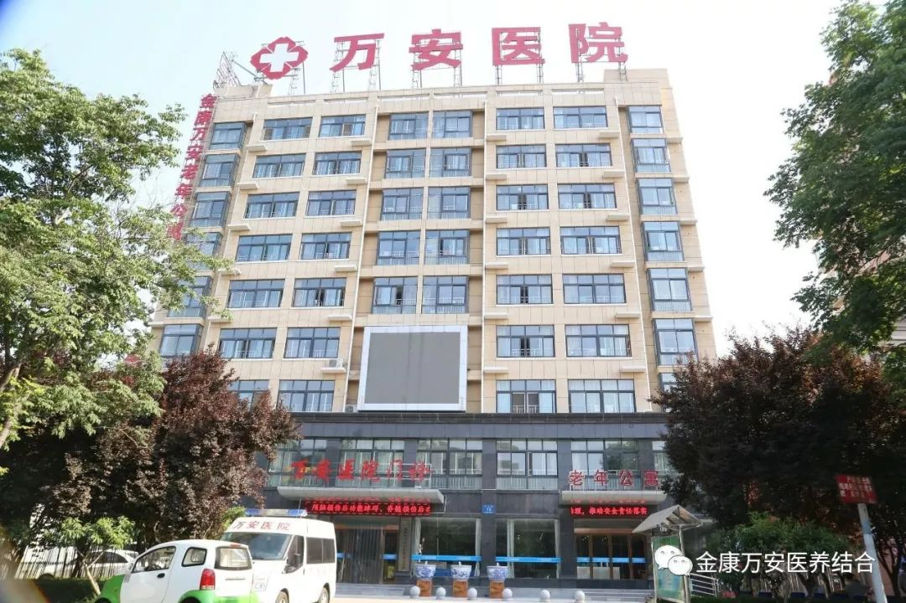
作者/梁超凡